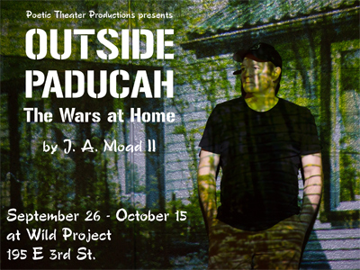

past performance |
|||
| 
Poetic Theater Productions presents Outside Paducah: The Wars at Home written and performed by J. A. Moad II showtimes & tickets:September 26-October 15 In Outside Paducah: The Wars at Home, written and performed by J. A. Moad II, we watch the toll of war reverberate across three generations of Americans: A seven year-old boy struggles to make sense of the screaming in the night after his father returns from Afghanistan. A fifty year-old man works to rebuild his life as he wrestles with the memory of an idealistic son—a teenager turned Marine who came back from Iraq wounded, disillusioned, and broken. And at a bar in the rust-belt remnant of his hometown, a former soldier’s midnight encounter brings the past and the present into an explosive, searing reality. About J.A. Moad II |
upcoming performances |
|||
 |
|||
| EVQ Film Festival 2018 August 20-25 |
|||
performance archives |
|||
| 2018 | 2017 | 2016 | 2015 |
| 2014 | 2013 | 2012 | 2011 |
| 2010 | 2009 | 2008 | 2007 |